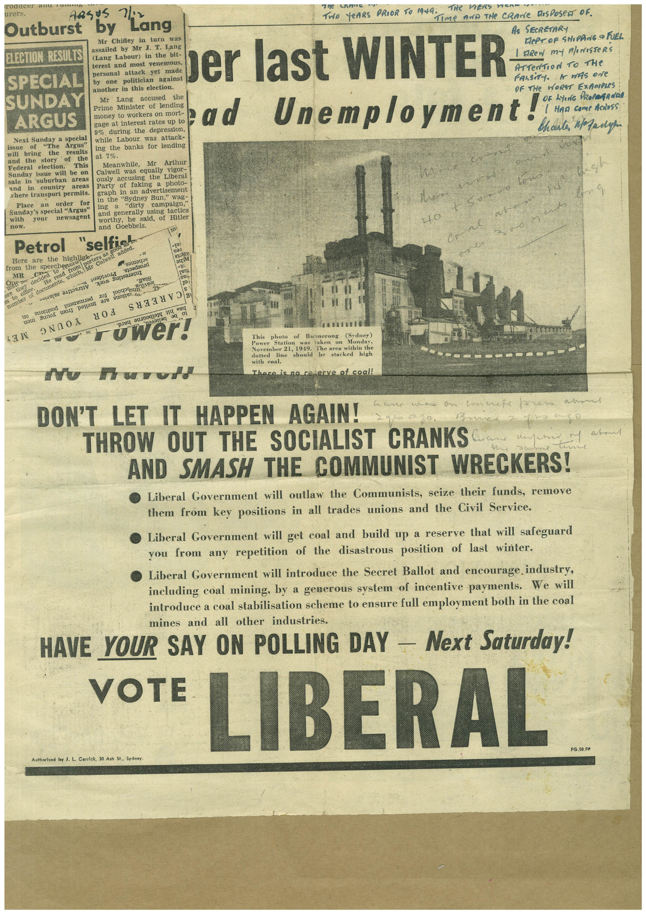

Book 1 · scan 132


Description
Transcription
Context
Review notes
Compare the machine draft with the scan. Handwriting and names need human review.
Artifacts
Edit the artifacts field in this note’s frontmatter to change these records. This summary is generated.
B01-S132-A01 — Newspaper clipping — Book 1, scan 132
Types: Newspaper clipping
Scope: Whole scanned page; individual items can be split out during review.
Caption: Not mapped yet.
Caption source: Not recorded yet.
Caption status: unmapped
Machine transcription
Outburst sasts Lang by Mr Chifley in turn was TrIO YeARS PRIOR TO 1949. me AViD THe CRANE ROSROSeN OF. As SECRETARY RePT OF SHIPPING 9 FUEL ELECTION RESULTS assailed by Mr J. T. Lang (Lang Labour) in the bit- terest and most venemous, SPECIAL SUNDAY ARGUS Next Sunday a special sche will "The Argus" bring the results and the the Federal election. This Sunday issue will be on sale in suburban area: and in country areas where transport permits. Place an order for Sunday's special "Argus" with newsagent ELOW personal attack yet made by one politician against ber last WINTER ArTerition to The another in this election. OF THE WORST EXAMIPRES Mr Lang accused the Prime Minister of lending money to workers on mort- gage at interest rates up to bad Unemploymenta 9% during the depression, while Labour was attack- ing the banks for lending at 7%. Meanwhile, Mr Arthur Calwell was equally vigor- ously accusing the Liberal Party of faking a photo- graph in an advertisement in the "Sydney Sun," wag- ing "dirty campaign," and generally using tactics worthy, he said, of Hitler and Goebbels. Petrol "selfish added. Here are the highligek- from the speechenur samaros MR Jo number TO!S Taut sole super 101 ruwer! No Harold This photo of Bunnerong Power Station (Sydney) Pover Ser 21, 1919. dotted The area within the line shoutic stacked high with coal. There is no reserve of coal! DON'T LET IT HAPPEN AGAIN! THROW OUT THE SOCIALIST CRANKS AND SMASH THE COMMUNIST WRECKERS! • Liberal Government will outlaw the Communists, seize their funds, remove them from key positions in all trades unions and the Civil Service. • Liberal Government will get coal and build up a reserve that will safeguard you from any repetition of the disastrous position of last winter. • Liberal Government will introduce the Secret Ballot and encourage industry, including coal mining, by a generous system of incentive payments. We will introduce a coal stabilisation scheme to ensure full employment both in the coal mines and all other industries. HAVE YOUR SAY ON POLLING DAY - Next Saturday! VOTE LIBERAL FG.50.FP Authorised by J. L. Carrick, 30 Ash St., Sydney.